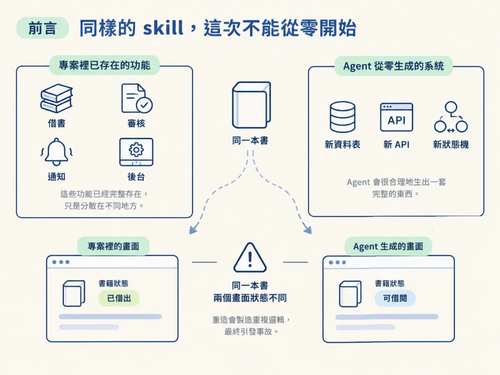
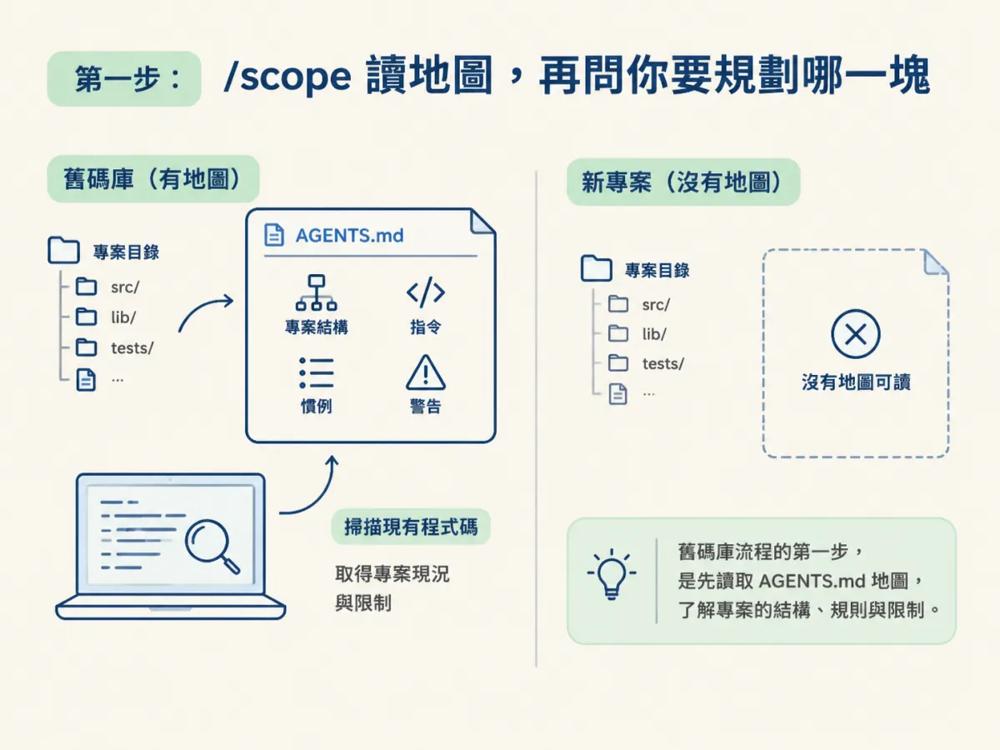
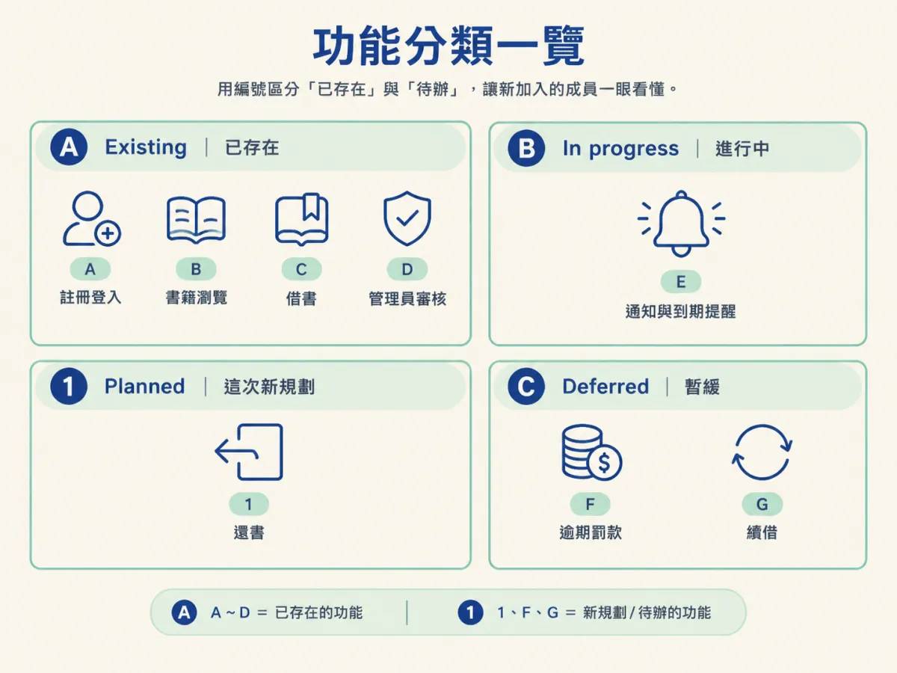
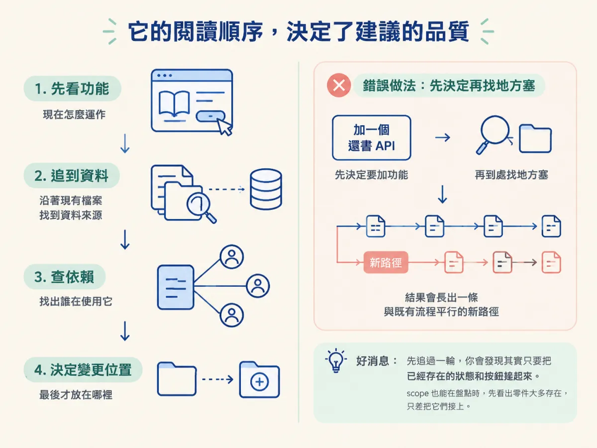
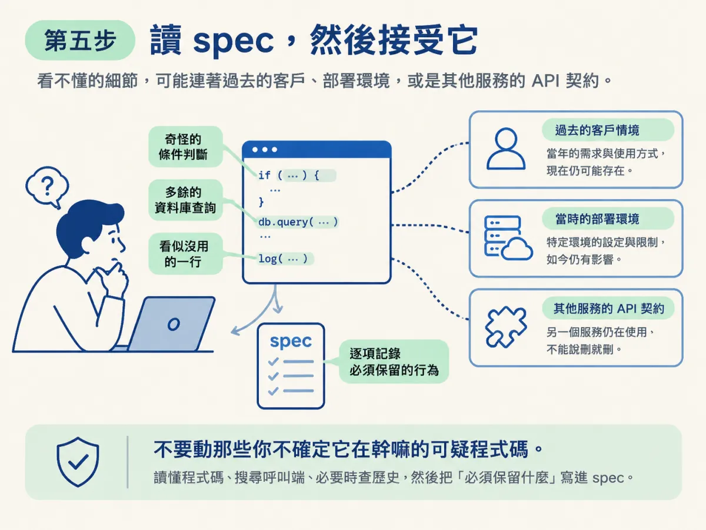

跑一次舊碼庫版的 /scope 加 /architect：讓 scope 讀地圖、把功能分成 existing／planned／deferred 寫進 docs/scope.md，再讓 architect 追過現有實作與依賴後才決定變更落點，並寫出保留既有行為的 spec。
你已經在新專案上用過 /scope 和 /architect。那時候專案是空的，它們的問題是「你想做什麼」、「你想怎麼做」，答案由你提供，它們負責整理成計畫。
現在情況反過來了。專案裡已經有借書、審核、通知、後台，你要加的是「還書」。如果你讓 agent 從零設計還書流程，它會很合理地生出一套完整的東西：新的資料表、新的 API、新的狀態機。問題是這些東西專案裡大多已經有了，只是散在幾個地方；它再造一份，你就得到兩套平行邏輯，過幾個月開始出現「同一本書在兩個畫面狀態不一樣」這種事故。

所以這一節的重點不是學會新指令，而是看清楚同一個指令在熟悉的順序裡，行為怎麼變：/scope 先讀地圖、盤點既有功能；/architect 先追現有實作與依賴，才決定變更放哪裡。
你需要的東西不多：一個已經跑過 /audit、地圖也驗過的 repo；一個新的 Claude Code 視窗；以及可用的 JSM agentic engineering skills。如果 skills 是全域安裝的，開窗就能用；不是的話，得先為這個專案裝一次。
後面的 demo 還會用到環境變數。這個專案的資料庫與登入都接外部服務，沒有 ENV 跑不起來。理想情況是有人把整份 ENV 交給你，或你自己把它們湊齊。
在新視窗裡直接跑 /scope，順便把你這次想做的 slice 講清楚。示範裡用的說法是「還書與續借流程」：學生可以歸還借出的書、可以續借延長到期日，管理員看得到更新後的狀態。
/scope
# 這次要規劃的 slice（示範說法）
還書與續借流程：學生可以歸還借出的書、續借延長到期日，
管理員可以看到更新後的狀態。在它建立任何計畫之前，它會先讀 /audit 產出的 AGENTS.md。這一步是整個舊碼庫流程的關鍵：地圖給了它專案結構、指令、慣例，以及它必須遵守的警告。你在新專案上不會看到這個動作，因為那時候沒有地圖可讀。

讀完之後，它做三件事：辨識這次會牽涉到 repo 的哪些部分、判斷工作應該用什麼順序進行、決定這個變更要多少驗證才夠。注意第三項：它不是一律用最重的流程，而是依變更的風險調整。
接著它會問你一個問題：「接下來想規劃圖書館應用裡的哪一塊？」同時，它已經在背景掃描既有程式碼，把「已經建好的功能」盤點出來。這個背景掃描不是為了寫程式，是為了讓後面的計畫知道哪些東西不用重做。
它會針對你選的 slice 繼續問：這次的範圍包含什麼、什麼先不做、有沒有什麼限制。示範裡的回答很具體：這次只做還書，逾期相關的先延後。
很快地，它交回一份功能盤點（feature inventory），把目前為止已經存在的功能全部記下來，然後繼續問你下一步想做什麼、想用哪種 build approach。它給的建議是根據自己對這個程式庫的了解推出來的，不是通用最佳實務。建議的品質取決於它讀到多少現況，所以前面才要先 audit。
課程也在這裡補了一個判斷：如果你只是要加一個很小的功能，或改一行字，通常會跳過 /scope 直接進 /develop；但比較大的功能，永遠從 /scope 開始。這個界線在最後一節會再展開。
計畫會寫進 docs/scope.md。它的結構不是待辦清單，而是把整個專案的功能分成三種狀態：已經存在的、進行中的、以及這次新規劃的。示範裡的結果大致像這樣：
# docs/scope.md（示意，依 demo 描述整理）
## Existing
- 註冊與登入（含大學 ID 圖檔上傳）
- 書籍瀏覽、摘要、借書
- 管理員審核使用者
## In progress
- 通知與到期提醒
## Planned
1. 還書（return a book）
- build approach：（你在 scope 時選定的方式）
- workflow：（你選定的流程層級）
## Deferred
- 逾期罰款與相關規則
- 續借還有一個小地方很有意思：新規劃的功能編號是 1，其他既有功能是用字母編的。這種編號慣例不是重點，重點是它把「新東西」和「已經存在的東西」在檔案裡明確分開，讓下一個進來的 skill 一眼就知道哪些是既成事實、哪些是待辦。

計畫完成後，先 /clear，再進 /architect。這個 clear 不是因為上一個對話做壞了，而是要讓 architect 從乾淨的上下文開始，只帶著檔案（地圖、scope、程式碼）進來，而不是拖著 scope 的整段問答。
在新視窗跑 /architect，指定還書這個功能。它開口第一件事不是提議方案，而是給你一個提醒：這個程式庫其實已經具備還書流程需要掛上去的大部分零件，包括 schema 裡的還書狀態、管理員的借閱紀錄、以及提醒流程裡的還書檢查。
接著它列出真正需要你決定的事：還書是學生自助、由管理員操作，還是兩者都支援？後台的下拉選單要不要沿用既有的元件？這些問題不是它偷懶，而是原本就存在於程式碼裡的岔路，只有你能決定要走哪一條。
它同時回報了掃描時看到、但不在這次 slice 裡的問題：書籍與使用者沒有刪除功能；管理員核准或拒絕時，介面聲稱會寄信，但實際上沒有寄；登入相關的文案可能有 sign in 與 sign-in 用字不一致的情況。這些它只記錄，不動手，並註明等那些區域被規劃時再處理。這個行為值得學起來：在舊碼庫裡，你會一直看到「不對但不在這次範圍」的東西，把它記下來是貢獻，順手修掉是風險。
在新專案上，architect 是從需求與你選的 stack 設計功能。在這裡，它的順序是固定的：
這個順序不能顛倒。如果先決定「我要加一個還書 API」，再去檔案裡找地方塞，你就會得到一個跟既有流程平行的新路徑；先追過一輪，你才會發現「其實只要把已經存在的狀態和按鈕接起來」。示範裡 scope 也幫了忙：它在盤點時就已經看出還書流程的零件大多存在，只差把它們接上。

課程對「不這樣做會怎樣」說得很重：如果沒有 audit、scope、architect，換成任何一個 agent，它大概都會從零把整套東西建出來，而且很可能用上跟專案不一致的函式庫。
讀完現況，architect 會先確認 framing：這次是在你既有的 stack 上做增強，不是一個新功能；它建立在既有的「借書」功能之上。這句話不是形式，它會影響後面每一個設計決定。增強意味著沿用、接線、對齊；新功能意味著新建。
然後進入需求階段，一次問一個關鍵問題。示範裡的答案組合是：只有管理員能觸發還書；效果要立即且原子；逾期與否不影響這次的行為；狀態下拉選單這次只接還書，其他狀態先不動。
「立即且原子」這個要求馬上遇到現實：它判斷這個流程沒辦法真正做到原子，於是回頭問你「要不要分成兩步做」。你同意。這種來回是正常的，重點是它在寫 spec 之前就把「做不到」講出來，而不是寫進計畫裡假裝做得到。
整個過程有一個反覆出現的原則：不要因為「這樣比較乾淨」就把東西全部重寫，先找出「必須做什麼」，不做多餘的修改。有時候這代表只更新一個既有函式；有時候代表在舊實作旁邊新增一份，逐步把呼叫端移過去，等到沒有東西依賴舊路徑之後，才把它移除（這個選擇下一節會細看）。
| 變更碰到什麼 | spec 要多寫什麼 | 為什麼 |
|---|---|---|
| 已存的資料 | 舊資料怎麼繼續運作、需不需要 migration | 資料不能像程式碼一樣說換就換 |
| 重要的 workflow | 新舊行為如何比對、何時讓新版本成為唯一路徑 | 需要一段可觀察的並行期 |
| 看不懂但仍在跑的行為 | 哪些行為必須保留，以及判斷的依據 | 它可能正在保護某個客戶情境或外部契約 |
| 對外的 API 或事件 | 呼叫端會受到什麼影響 | 另一個服務可能還依賴目前的形狀 |
需求問完，spec 會寫進 specs/ 底下，示範裡是 specs/0001-return-a-book/。在按下接受之前，先自己讀一遍。一份好的舊碼庫 spec 不只描述最終功能，它會交代四件事：
第二項「哪些既有行為必須維持不變」是舊碼庫特有的。老程式碼裡常有一些第一眼看不懂的細節：一個奇怪的條件可能是在處理好幾年前的某個客戶情境；一個看起來多餘的資料庫查詢，可能只是因為當時的部署環境行為不同；一行看起來沒用的程式，可能在保護另一個服務仍在使用的 API 契約。
所以 architect 不會因為「一時看不懂它為什麼存在」就把行為移除。它會讀程式碼、搜尋呼叫端、必要時查歷史，然後把「必須保留什麼」寫進 spec。課程用一句話總結這個態度：不要動那些你不確定它在幹嘛的可疑程式碼。

spec 裡還會有一份完整的 build plan、後果與 follow-up。接受之後，scope 會跟著更新，反映這次 spec 定案後的狀態。到這裡，規劃結束，可以進 /develop 了。
你可以用三個具體產物確認這一步做完了：docs/scope.md 裡看得到 existing／in progress／planned／deferred 四種分類，而且新功能與既有功能分得開；specs/ 底下有一份 spec，寫明了不可變的行為與驗證方式；scope 已同步更新。
最常見的失敗是「scope 只當成形式」：跑了一次，但沒有真的回答那些範圍問題，於是 architect 拿到一個模糊的 slice，只能自己補空白。另一個相反方向的失敗，是讓 architect 把「順便整理一下」也放進計畫，結果 diff 裡混進一堆與還書無關的重構。兩者的修正方式一樣：把這次的邊界說清楚，並且在讀 spec 時檢查「哪些既有行為必須維持不變」這一段有沒有真的寫出來。
在舊碼庫裡，/scope先讀 audit 產出的地圖，盤點既有功能，把這次的 slice 分成 existing／planned／deferred 寫進docs/scope.md；/architect則先讀功能現在怎麼運作、把請求追過現有檔案、查誰依賴它，最後才決定變更放哪裡。它把這次工作框成「既有 stack 上的增強」，寫出保留既有行為、可能需要的 migration、以及如何證明的 spec。這一階段的產物是計畫，不是程式碼。
下一步才是真正動手。/develop 會讀周邊檔案、沿用既有模式，並且在換掉舊路徑之前先搜尋所有引用。我們會看它怎麼把改動收在四個檔案裡，完成一個不需要 migration 的還書功能。